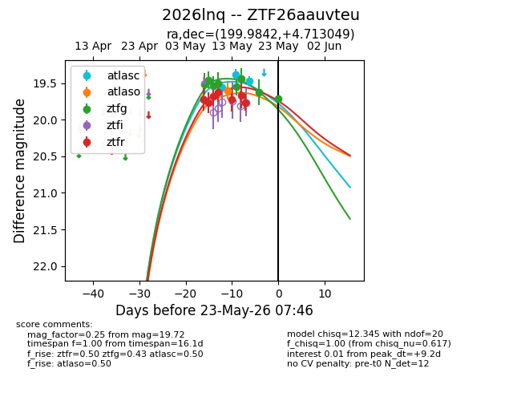
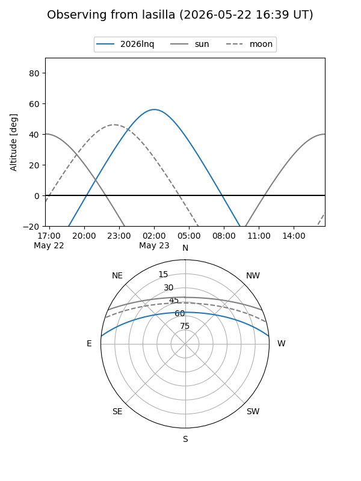
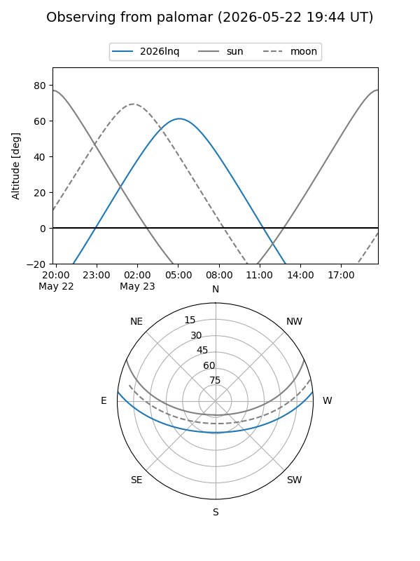
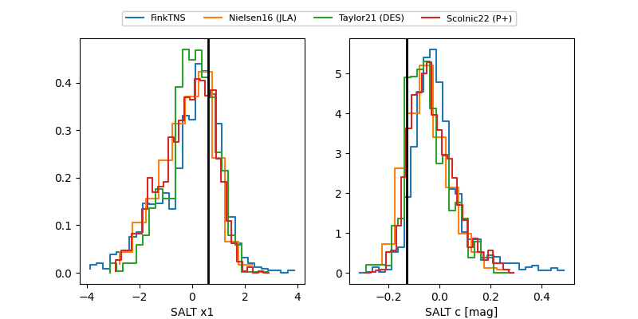

2026lnq
Target 2026lnq at 2026-05-23 07:47
Aliases and brokers:
lsst-FINK: link
lsst-Lasair: link
lsst-ALeRCE: link
ztf-FINK: link
ztf-Lasair: link
ztf-ALeRCE: link
TNS: link
YSE: link
alt names
ZTF26aauvteu (ztf,fink_ztf)
2026lnq (tns,yse)
Coordinates:
equatorial (ra, dec) = 199.9842,+4.71305
equatorial (HMS+DMS) = 13:19:56.20,+04:42:46.98
galactic (l, b) = (321.0488,+66.57715)
Flags:
Photometry:
last atlasc=19.47, atlaso=19.60, ztfg=19.72, ztfr=19.76
3 atlasc, 1 atlaso, 8 ztfg, 7 ztfr detections
Lightcurve

Visibility


Additional plots
